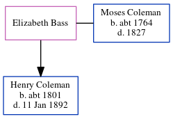

Elizabeth Coleman (née Bass)
[ Home ] | [ Calendar ] | [ Surnames Index ] | [ Errors ] | [ Family History ]Elizabeth Bass was the 4 times great-grandmother of Nigel Horne and married Moses Coleman (with whom she had 1 child, Henry) in Badlesmere, Kent, England on 22 Nov 17921.
Children
- Henry was born c. 1801
Citations
- Public Member Trees Online publication - Provo, UT, USA: The Generations Network, Inc., 2006.Original data - Family trees submitted by Ancestry members.Original data: Family trees submitted by Ancestry members.
Family Tree
Map
Generated by ged2site. Last updated on Jul 3, 2024